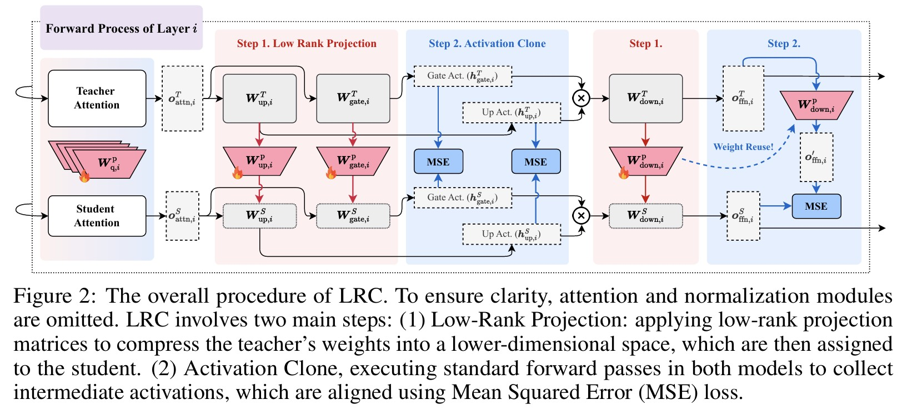
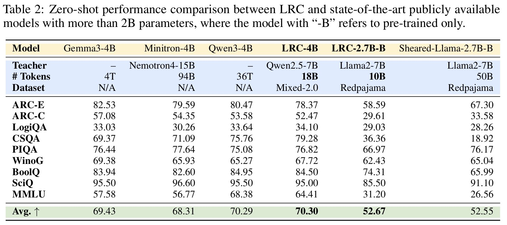

📢 TL;DR： 我们通过训练一组 Low-Rank Projection（低秩投影） 矩阵，将一个强大的教师大模型（Teacher
LLM）直接“投影”为一个更小的学生模型（Student SLM）。无需从头训练庞大的学生模型权重，只需优化这些投影矩阵。最终，我们仅用 20B 训练数据，就训练出了性能与使用
36T 数据的 SOTA 模型 Qwen3-1.7B 相当的 LRC-1.7B，实现了 超过 1000× 的训练效率提升。
📂 代码与模型权重已公开 ｜
📖 点击阅读详细解读
2025年10月，第39届NeurIPS（Conference on Neural Information Processing Systems, 2025）录用论文名单正式公布。由哈尔滨工业大学（深圳）智能科学与工程学院多媒体智能前沿实验室（M3AIL Research Group）研究生郝继泰（第一作者）在俞俊教授、黄强教授指导下，与百度公司和莱顿大学合作完成的论文《A Token is Worth over 1,000 Tokens: Efficient Knowledge Distillation through Low-Rank Clone》成功入选本届NeurIPS主会（Main Track），标志着团队在高效语言模型蒸馏与大模型压缩方向取得了重要突破。
本论文提出了创新性的低秩克隆（Low-Rank Clone, LRC）方法，用于高效构建小型语言模型（SLMs）。传统知识蒸馏往往面临信息丢失、表征对齐低效及前馈层激活未充分利用等问题。LRC通过引入可训练的低秩投影矩阵，实现了软剪枝（Soft Pruning）与激活克隆（Activation Clone）的统一建模，使学生模型在行为上逼近教师模型，无需额外的对齐模块或大规模训练数据。
在多个标准语言理解基准（如MMLU、ARC、PIQA、BoolQ等）上，LRC模型展现了显著优势。LRC-1.7B仅使用Qwen2.5-3B作为教师模型、20B token训练，即可匹敌甚至超越Qwen3-1.7B（使用36T token训练）与SmolLM2-1.7B等强基线模型。研究进一步揭示了前馈网络（FFN）层在知识迁移中的关键作用，为高效蒸馏提供了新的解释视角。
本研究由哈尔滨工业大学（深圳）牵头，联合百度公司与荷兰莱顿大学合作完成。充分体现了M3AIL实验室在大模型高效化与知识蒸馏研究领域的持续创新能力。
LRC为高效语言模型训练提供了全新范式，其低成本、高可扩展性特性有望推动AI模型的普惠化与绿色发展。未来，团队将进一步探索LRC与结构化剪枝、量化压缩等技术的结合，推动轻量化大模型在更多场景落地。